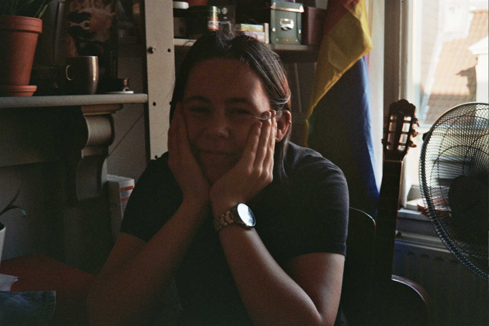
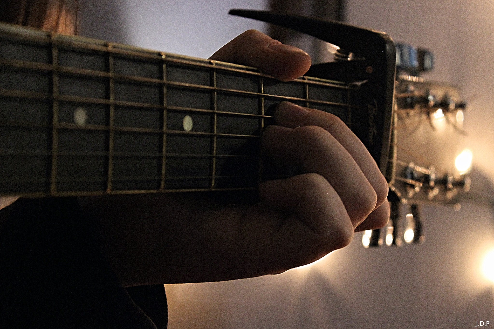

Hoi! Ik ben Jule. Ik ben opgegroeid in Ertvelde (ja, het dorp van Eddy Wally) en heb mijn middelbaar gespendeert
in Eeklo en Gent.
Daar heb ik vele verschillende richtingen gestudeerd zoals Economie-Wiskunde, Audiovisuele kunsten,
Wetenschappen-Wiskunde en als laatste Humane Wetenschappen.

Nadat ik alle opties op het middelbaar had geprobeerd, had ik nog altijd niet gevonden wat ik later wou doen.
In mijn vrije tijd begon ik een beetje te coderen, vooral CSS en JavaScript. Toen ik voor een verdere opleiding moest
kiezen twijfelde ik erg tussen Sociologie en Informatica, maar uiteindelijk heb ik toch gekozen voor
Informatica!
Na 3 jaar studeren, ben ik bijna afgestudeert. Enkel mijn bachelorproef moet ik nog afwerken, en dan ben ik
klaar! In September ben ik beginnen werken bij Codit, een heel nieuw avontuur dus. Ik kijk er naar uit om
veel bij te leren over het vak.
Ondertussen zal ik mijn bachelorproef dus afwerken, en daarna zal ik waarschijnlijk nog in afstandsonderwijs
verder studeren.

Naast school, heb ik ook vele hobby's, zoals klassieke gitaar leren, fotografie en videografie en tekenen. Sinds
mijn 9e speel ik gitaar, en in 2020 ben ik eindelijk begonnen aan de muziekschool met de opleiding klassieke
gitaar. Naast deze passie voor muziek, ga ik ook graag sporten zoals fietsen, lopen en fitness. En ik lig natuurlijk ook graag op de bank af en toe.